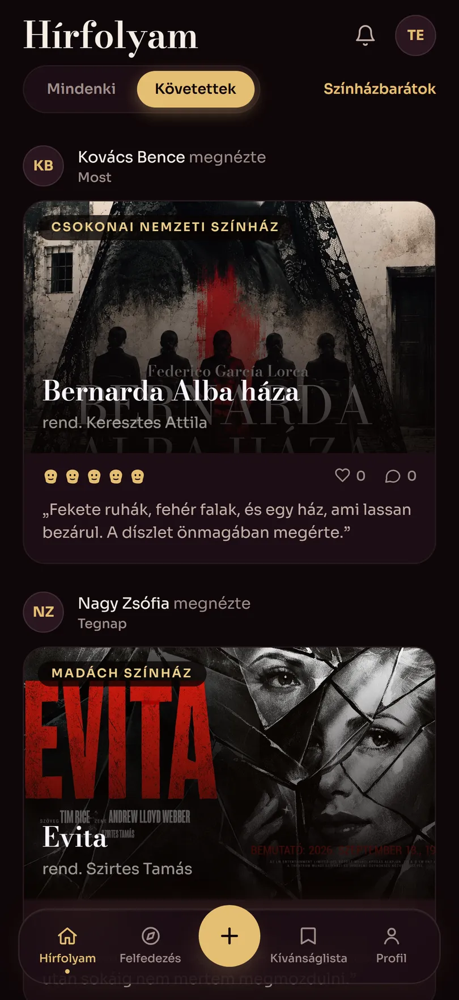

Listák
Szerkesztői és saját listák — „Bodó Viktor Budapesten”, nyolc rendezés három színházban. Rangsorolható, megosztható, és bárki megnyithatja fiók nélkül is.


Magyar színházi napló
Nézd meg, mi megy ma este nyolc színházban. Jegyezd fel, amit láttál, értékeld, és évek múlva is tudni fogod, melyik este volt az.
A katalógusban most
I. Felvonás · Felfedezés
Nyolc színház műsora egy helyen — nem jegyirodán át, hanem közvetlenül a színházak saját oldaláról, minden éjjel újraolvasva.

Műsor
A Műsor nézet napokra bontva mutatja, mi hol és hánykor kezdődik — teremmel, hosszal és műfajjal együtt. Ma, holnap, vagy bármelyik este a szezonban.
Az app négy állapotot ismer

II. Felvonás · A napló

Előadás naplózása
Naplózz egy előadást: melyik estén voltál, hol ültél, mennyibe került a jegy. A színészi játékot, a rendezést és a díszletet külön értékeled — és megírhatod, mit gondoltál róla.
Profil
Minden megnézett előadás egy lapon, plakáttal, dátummal és értékeléssel. Nyilvános, ha akarod — így meg lehet mutatni, mit láttál ebben az évadban.
Az évad végén a Vastaps összeszámolja: hány estét töltöttél színházban, melyik házban a legtöbbet, és kit láttál a legtöbbször színpadon.

III. Felvonás · Alkotók
Színészek és rendezők
A katalógus 2424 névvel indul. Rákeresel egy színészre, és megkapod mindent, amiben a nyolc színházban játszott — szereppel, évszámmal, színházzal. A rendezők ugyanígy.
Ha bejelentkezel, szólunk, amikor egy követett alkotó új előadásban lép színpadra.


Szerkesztői és saját listák — „Bodó Viktor Budapesten”, nyolc rendezés három színházban. Rangsorolható, megosztható, és bárki megnyithatja fiók nélkül is.
Amit még meg akarsz nézni. Ha meghirdetik a következő időpontot, a darab magától előrébb kerül.
Kik mit néztek meg és mit gondoltak róla. Követhetsz másokat, vagy nézheted mindenki bejegyzéseit.
Sötét bordó, hűvös szén, krémszínű műsorfüzet, papír és fehér. Mindegyikben minden szövegszín 4,5:1 fölött van — és bejelentkezés nélkül is át lehet váltani.
A Vastaps nem jegyiroda, és nem is akar az lenni. Egy koppintás kivisz a színház saját oldalára, oda, ahol tényleg meg lehet venni.
IV. Felvonás · A színfalak mögött
A tárháznak nemcsak a kódja publikus: minden döntés indoklása is le van írva benne, azzal együtt, ami először nem működött.
Nem. A Vastaps ingyenes, nem árul jegyet, és nincs benne hirdetés. Nincs mögötte cég sem — egyetlen ember csinálja.
Közvetlenül a színházak saját oldalairól, minden éjjel újraolvasva. Tíz adapter olvassa a nyolc színházat — van, ahol a színház nyilvános API-jából, van, ahol a műsoroldalról. Jegyirodai aggregátorokat szándékosan nem használ.
Budapesten az Örkény István Színház, a Katona József Színház, a Nemzeti Színház, a Centrál Színház, a Madách Színház és a Vígszínház; Debrecenben a Csokonai Nemzeti Színház és a Vojtina Bábszínház. A lista bővül — ha hiányzik a kedvenced, írj.
A böngészéshez nem: a műsor, a darabok, az alkotók és a listák fiók nélkül is megnyithatók. Naplózáshoz, értékeléshez és kívánságlistához kell egy e-mail-cím és egy jelszó.
A webes verzió most is telefonra van tervezve, és a böngésződből a kezdőképernyőre tehető. Az App Store-os és Play Store-os build készül — a natív projekt és a mélylinkek már megvannak hozzá.
Maior Ottó, egyedül. A tervezéstől az adatbázison és a szinkronon át a szövegekig. Lentebb megtalálod az elérhetőségét.
V. Felvonás · A stáblista
Vastaps
Egyszemélyes produkció
Kapcsolat
Színház vagy, és szeretnéd, hogy a műsorod is benne legyen? Sajtó, együttműködés, hibajelentés, vagy csak kíváncsi vagy, hogyan készült? Egy e-mail elég — magyarul vagy angolul.
ottomaior@protonmail.com